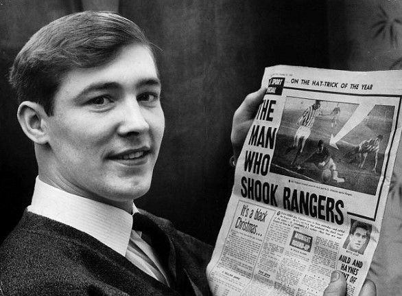

Chương 5

ùa giáng sinh năm 1963 đánh dấu một bước ngoặt trong đời cầu thủ của Alex Ferguson.Trong lần đầu tiên trở lại giải hạng nhất, sau bảy tháng trời lây lất với đội hình hai, anh lập hattrick vào lưới Rangers ngay tại Ibrox[1]. Ba cú sút chân trái chỉ trong vòng 23 phút đem lại chiến thắng 3-2 cho St Johnstone.Anh lẽ ra phải ghi đến năm bàn, nếu như không xui xẻo hai lần đưa bóng trúng xà ngang. Bản thân Alex cũng không tin nổi vào vận may của mình, và gọi đó là một phép màu. Đây là lần thứ nhất kể từ năm 1925, St Johnstone mới thắng nổi Rangers tại Ibrox, và cho đến ngày nay, Alex Ferguson vẫn là cầu thủ duy nhất của St Johnstone ghi được hattrick trước Rangers. Trong phòng tắm sau trận đấu, một cầu thủ đàn anh vỗ vai Alex “Chú mày vừa làm nên lịch sử, có biết không?”. Khi ra về, lần đầu trong đời, Alex được nhà báo đi theo phỏng vấn. Ngày hôm sau, anh xuất hiện trên trang nhất những tờ báo lớn nhất Scotland, bên cạnh những dòng tít như “Ferguson: Kẻ Làm Rung Chuyển Rangers”. Từ một cầu thủ ít ai biết đến, Alex bỗng trở thành “hàng hot” trên thị trường chuyển nhượng.
Người duy nhất không tỏ vẻ ấn tượng trước thành tích của Alex chính là…cha anh.Khi Alex từ Ibrox về đến nhà, cha anh bình thản ngồi đọc sách như mọi ngày.
“Bố thấy con chơi hôm nay thế nào?”
“Cũng được”.
Hết biết! Alex chỉ còn biết quay sang mẹ, cười và nhún vai…
Bước vào năm 1964, có thể nói Alex Ferguson đã thành danh.Từ sau ba bàn vào lưới Rangers, anh bước lên một đẳng cấp mới, và chiếm được vị trí quan trọng hơn ở St Johnstone. Thu nhập tăng lên, anh mua được xe hơi, và bắt đầu rủng rỉnh tiền để chơi cá cược. Trong các trò cá cược, anh mê nhất là bắt độ đua ngựa.Về đường tình duyên, Alex cũng đỏ.Anh quen cô bạn gái mới Cathy Holding. Lần đầu tiên gặp gỡ, Cathy ngỡ Alex là…thằng du côn, vì anh lúc ấy mũi đang gãy, hai mắt thì bầm tím: Hậu quả của việc “ăn” nhằm cùi chỏ của đối phương trên sân cỏ. Tiếp xúc dần dần, cô mới thấy anh dễ thương. Việc có thêm thu nhập từ bóng đá cũng giúp anh có thêm lợi thế so với các công nhân khác đang theo đuổi cô.Chỉ có một trở ngại giữa hai bên: Trong khi Alex theo Tin Lành, Cathy lại là tín đồ Công giáo. Song khi thật sự yêu nhau, đó không phải vấn đề lớn lao.
Phong độ tại St Johnstone giúp Alex lọt vào mắt xanh HLV đội Dunfermline: huyền thoại Jock Stein. Stein yêu cầu lãnh đạo CLB phải mua bằng được Alex. Khi Stein rời Dunfermline, HLV kế nhiệm là Willie Cunningham vẫn tiếp tục theo đuổi Alex. Dunfermline chính thức có được Alex vào mùa hè năm 1964.
Lần cuối cùng khoác áo St Johnstone, Alex lại chạm trán Glasgow Rangers, và một phen nữa giành chiến thắng. Song chiến thắng lần này không mang nhiều ý nghĩa, do trước đó Rangers đã hoàn tất cú ăn ba (VĐQG, Cúp QG, Cúp LĐ) nên chẳng còn động lực nào để thi đấu. Suốt bốn năm tại Muirton Park, Alex ra sân có 47 lần, nhưng cũng kịp ghi đến 23 bàn. Trong 47 lần này, có một lần anh đóng vai…thủ môn! Trong trận đấu giữa St Johnstone và Hearts vào tháng hai, 1964, thủ thành St Johnstone bị chấn thương giữa chừng.Lúc ấy, luật bóng đá chưa cho phép thay người; Alex đang chơi tiền đạo, bị HLV kéo xuống giữ gôn. Chàng thủ môn tội nghiệp để lọt lưới ba bàn, góp phần “giúp” đội nhà thua chung cuộc 1-4.
Chuyển tới Dunfermline, CLB lớn hơn hẳn so với St Johnstone[2], Alex băn khoăn, không biết có nên chuyển hẳn sang thi đấu chuyên nghiệp hay không. Ở Dunfermline, cầu thủ chuyên nghiệp nhận lương “cứng” 27 bảng một tuần, thắng một trận được thưởng ba bảng, tuần nào đứng nhất trên bảng xếp hạng được thêm 14 bảng, đứng thứ hai được 12, thứ ba được 10. Cầu thủ bán chuyên chỉ được trả có 16 bảng mà thôi. Nhưng nếu vẫn chơi theo kiểu bán chuyên, Alex còn được lãnh thêm lương thợ 27 bảng nữa. Tính tổng cộng thì vừa đá bóng vừa làm thợ vẫn lợi hơn, nên ban đầu, Alex tính giữ công việc tại Remington Rand. Được ít lâu, anh đổi ý, quyết định nghỉ hẳn nghề thợ.Tiền dù ít hơn, song đá bóng mới là công việc anh yêu thích. Vả lại, “nhất nghệ tinh, nhất thân vinh”, tập trung đá bóng thì trình độ ngày càng tiến, mà trình độ tiến thì lo gì thu nhập không tăng.
Việc Jock Stein rời Dunfermline để lại trong Alex nhiều luyến tiếc. Cầu thủ Alex thần tượng là huyền thoại Old Trafford: Denis Law, nhưng người mà anh kính trọng và nể phục nhất chính là Stein. Tuy không có dịp chơi bóng dưới sự dẫn dắt của Stein, Alex vẫn giữ liên lạc thường xuyên với bậc thầy này.Mỗi khi đứng trước một quyết định quan trọng trong đời và cần một lời khuyên, Alex thường gọi cho Stein.
Mùa ra mắt tại Dunfermline, Alex ngay lập tức bùng nổ.Anh ghi tổng cộng 22 bàn (15 bàn trong giải VĐQG, 7 bàn tại các cúp), trở thành vua phá lưới của CLB.Khoác áo Dunfermline, anh cũng có cơ hội tham gia các cúp châu Âu.Trận đầu tiên của Alex trên đấu trường châu Âu diễn ra tại Thụy Điển, nơi Dunfermline cầm hòa Orgryte of Gothenburg 0-0 trong khuôn khổ Cúp C3 (lúc bấy giờ mang tên Cúp Hội Chợ). Mùa giải ấy, Dunfermline vào đến vòng ba cúp C3, trước khi thất thủ dưới tay Athletic Bilbao.
Về quốc nội, Dunfermline thẳng tiến trên đường tới cú đúp: Tại giải VĐQG, họ cạnh tranh quyết liệt vị trí quán quân với Kilmarnock và Hearts; tại Cúp QG, họ vào đến chung kết, gặp Celtic. Trong trận đấu áp chót của giải, Dunfermline cần một chiến thắng trước St Johnstone. Đối mặt với đội bóng cũ, Alex Ferguson ghi một bàn, nhưng bỏ lỡ hàng loạt cơ hội, và tỷ số chung cuộc là 1-1. Chỉ kiếm nổi trận hòa, Dunfermline để Kilmarnock vượt qua trên bảng xếp hạng, với một điểm nhiều hơn.Dunfermline đè bẹp Celtic 5-1 trong trận cuối cùng, nhưng chiến thắng hoàn toàn vô nghĩa, bởi Kilmarnock cũng thắng, và lên ngôi vô địch.
Chung kết Cúp QG mùa 1964-1965 để lại kỷ niệm không thể nào quên cho Alex: Một kỷ niệm buồn. Trước trận đấu quan trọng này, HLV Willie Cunningham bị đặt vào tình thế khó khăn: Cặp tiền đạo chính của Dunfermline là Ferguson-McLaughlin, nhưng khi McLaughlin chấn thương, tiền đạo dự bị Melrose được ra sân, đã ghi bàn giúp đội giành chiến thắng ở bán kết. Nay McLaughlin đã bình phục, biết phải chọn ai đá chung kết đây? Melrose vừa lập công, chẳng lẽ không tưởng thưởng?Mà cho Melrose đá chính, thì loại ai giữa Ferguson và McLaughlin?Rốt cuộc, Cunningham quyết định loại Alex, nhưng ông giữ kín, không cho ai biết.
Mãi đến ngay trước trận đấu, khi cầu thủ đã tập hợp trong phòng thay đồ, chuẩn bị ra sân, Cunningham mới đọc danh sách đội hình[3]. Không nghe thấy tên mình, Alex không giữ nổi bình tĩnh, anh chửi thẳng vào mặt HLV trưởng “Đồ khốn kiếp!”. Rồi mặc cho chủ tịch CLB đứng cạnh đó hết sức can ngăn, anh vẫn tiếp tục chửi rủa xối xả. Các cầu thủ khác chỉ đứng lặng nhìn, hầu hết đều choáng váng: Choáng vì thái độ của Alex, và cũng vì không ngờ HLV lại có thể loại đi chân sút ghi bàn nhiều nhất đội.
Hành động Alex làm dĩ nhiên sai trái, nhưng hãy thử đặt mình vào địa vị của anh: Cứ đinh ninh mình sẽ được ra sân, đến giây phút cuối cùng thì vỡ mộng, không thể nào không bức xúc. Kỷ sở bất dục, vật thi ư nhân; được một bài học nhớ đời đó, nên sau này khi trở thành HLV, Alex không để bất kỳ cầu thủ nào rơi vào tình cảnh giống như mình ngày xưa.Khi loại một cầu thủ, Alex không bao giờ đợi đến phút cuối cùng. Anh luôn báo trước cho cầu thủ ấy, và giải thích cặn kẽ lý do vì sao cậu ta bị loại.
Trở lại với trận chung kết, tuy Melrose và McLaughlin đều lập công, nhưng như thế vẫn là chưa đủ, vì Celtic ghi được đến ba bàn để giành thắng lợi 3-2. Từ chỗ đang tràn trề hy vọng giành cú đúp, Dunfermline cuối cùng mất cả chì lẫn chài! Quan hệ giữa Alex và HLV Cunningham, tuy nhiên, không vì thế mà tan vỡ.Hai thầy trò này đều có cá tính rất mạnh, nên khi làm việc rất dễ xung đột. Dù vậy, họ vẫn tôn trọng và đánh giá cao về nhau: Hễ xung đột xong rồi thì thôi, chứ không ai thù ai oán ai. Tất nhiên, Alex vẫn giận Cunningham, nhưng không vì vậy mà tiếp tục gây sự chửi rủa.Anh quyết tâm trút nỗi giận ấy vào sân cỏ.
Khi Alex Ferguson trút giận lên sân cỏ thì khung thành đối phương tả tơi. 1965-1966 là mùa đỉnh cao trong sự nghiệp Alex, khi anh giành chức đồng vua phá lưới giải VĐQG Scotland (chia sẻ cùng Joseph McBride của Celtic) với 31 bàn trong 31 trận, đồng thời phá luôn kỷ lục cầu thủ ghi bàn nhiều nhất trong một mùa giải cho Dunfermline (kỷ lục cũ là 25 bàn). Nếu tính tất cả các mặt trận, Alex ghi đến 45 bàn!
Đánh giá về Alex, một nhà báo lúc bấy giờ nhận xét: anh có “bản năng sát thủ của một con nhện rình mồi”. Không đặc biệt nổi trội về tốc độ hay kỹ thuật, nhưng Alex giỏi không chiến, chọn vị trí rất tốt, thường xuyên có mặt đúng lúc đúng chỗ để ghi bàn. Hầu hết các bàn thắng của Alex đều được ghi từ những pha dứt điểm cận thành, trong vòng 16m50, rất hiếm có các cú sút xa. Ngoài khả năng chớp thời cơ, Alex còn nổi tiếng vì phong cách chơi rất rắn. Khi tranh chấp bóng, anh hay vung tay sang bên, nhiều khi dùng cùi chỏ thúc vào đối phương, do đó được đồng nghiệp đặt cho biệt danh “Cùi Chỏ Dao Lam”. Dường như Alex cảm thấy thích thú với biệt danh ấy, bằng chứng là khi mở quán rượu kinh doanh, anh đã đặt tên cho đại sảnh trong quán là sảnh “Cùi Chỏ”. Về sau, khi nhớ lại thời cầu thủ, Sir Alex tự đánh giá về mình “Tôi không phải cầu thủ hay chơi xấu, nhưng là tiền đạo thì buộc phải quyết liệt, nếu không quyết liệt sẽ bị hậu vệ bên kia “xử đẹp” ngay.”
Tại Dunfermline, các cầu thủ có thói quen dùng bữa trưa tại nhà hàng Regal; sau khi ăn xong thì ngồi tán gẫu, bàn chuyện bóng đá và chiến thuật. Đồng đội ai cũng nể Alex, coi anh như một bộ bách khoa thư về bóng đá. Những năm 1960 làm gì đã có mạng Internet, việc tìm kiếm thông tin hết sức khó khăn, nhưng ngoài thời gian trên sân, Alex chịu khó học hỏi, tìm đọc đủ loại sách báo về bóng đá, nên trên trời dưới biển, chẳng có chuyện gì anh không biết. “Kiến thức của ảnh thật bao la”, một đồng đội nhớ lại “Trong khi chúng tôi chỉ lo chú ý đến phụ nữ, ảnh nghiên cứu và biết hết về những đối thủ sắp gặp”.Chẳng những biết nhiều, Alex còn sở hữu một trí nhớ phi thường. Không cần nhìn sách nhìn vở, anh có ngồi thể đọc vanh vách, không vấp váp đội hình của hàng loạt CLB, không chỉ ở Scotland mà trên khắp châu Âu, và không chỉ đội hình hiện tại mà cả đội hình trong quá khứ.
Chính những buổi bàn luận chiến thuật ấy đã gieo trong Alex niềm yêu thích giành cho nghề huấn luyện. Mùa hè năm 1965, anh theo học lớp HLV tại trung tâm đào tạo của Liên Đoàn Bóng Đá Scotland. Tốt nghiệp năm 1966, nhưng trong mấy năm tiếp theo đó, mỗi hè anh đều quay lại học thêm mấy khóa bồi dưỡng. Tại CLB mình đang thi đấu, Alex cũng không bỏ lỡ cơ hội học tập. Mỗi khi HLV chỉ đạo điều gì, anh đều theo hỏi cho thật kỹ “Tại sao phải làm thế này? Vì sao phải tập thế kia?”…Anh tìm hiểu kỹ về những chiến thuật “thời thượng” lúc bấy giờ, như đội hình 4-3-3 không tiền vệ cánh (sau này được Alf Ramsey áp dụng, giúp đội tuyển Anh lên ngôi vô địch World Cup 1966), hay phong cách catenaccio của người Ý.
Từ trên đỉnh cao sự nghiệp cầu thủ, Alex quyết định lập gia đình. Anh bán xe, dồn tiền mua căn nhà riêng ở Simshill, gần sân Hampden Park. Ngày mười hai tháng ba năm 1966, Alex và Cathy chính thức xe duyên. Do tôn giáo khác nhau, hai người chỉ đăng ký kết hôn, chứ không làm lễ nhà thờ. Trong chính ngày trọng đại của mình, chú rể cũng không được nghỉ phép: Vua phá lưới mà nghỉ phép thì lấy ai thay? Chụp xong ảnh cưới, Alex phải tất tả ra sân ngay.Vừa giúp đội nhà giành thắng lợi trước Hamilton, anh lại vội vã tắm rửa, thay đồ, trở về nhà dự tiệc tối với hai họ.Không có trăng mật trăng gấu gì sất.Cặp vợ chồng mới cưới chỉ động phòng với nhau được một đêm.Sáng sớm hôm sau, Alex đã phải tập trung cùng Dunfermline, chuẩn bị cho trận tứ kết cúp C3 gặp Real Zaragoza.Cathy không vui, nhưng biết làm thế nào?Lấy chồng cầu thủ thì phải chấp nhận điều ấy.Suốt đời mình, Sir Alex luôn biết ơn vợ, vì bà đã hy sinh rất nhiều cho sự nghiệp bóng đá của chồng.
Hai năm sau ngày cưới, Cathy sinh con trai đầu lòng.Hai vợ chồng bàn với nhau chuyện đặt tên cho con. Alex đề xuất cái tên…Alexander!
“Thôi đi”, Cathy cằn nhằn, “Thế thì anh là Alex lớn, nó là Alex bé à?”
“Nhưng em ơi, trong họ nhà Ferguson, hễ con trai đầu lòng thì đều tên Alex cả.”
Đúng lúc ấy, ông Alex bố bước vào.
“Bố ơi, ông nội nhà mình tên gì ấy nhỉ?” Cathy hỏi
“À, ông nội tên John”
Thế là bể mánh!
Sau cùng, em bé được đặt tên là Mark.

Alex Ferguson sau hattrick lịch sử vào lưới Rangers (ảnh: Unitedrant.co.uk)
[1]Hattrick đầu tiên của Alex Ferguson tại giải VĐQG Scotland.
[2] Thập niên 1960 được coi là hoàng kim thời đại trong lịch sử Dunfermline. Họ hai lần giành Cúp QG (1961 & 1968) và hầu như năm nào cũng được dự Cúp C2 hay C3.
[3]Không được chọn vào đội hình chính đồng nghĩa với việc hoàn toàn không còn cơ hội ra sân, vì lúc đó chưa có luật cho thay người.